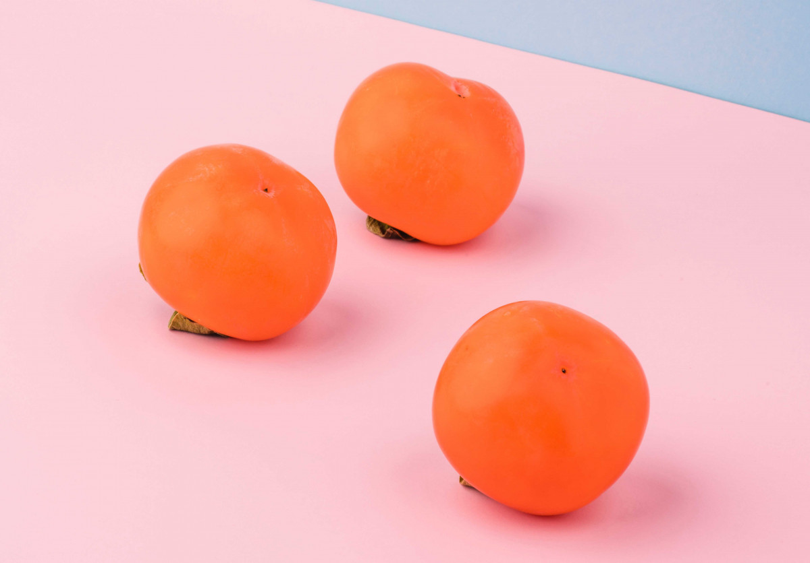
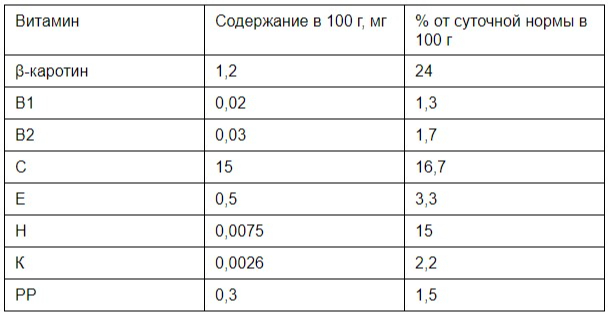

Польза и вред хурмы для здоровья: советы врача
Виды хурмы
Существует несколько распространенных сортов хурмы:
- «Королек» или шоколадная хурма. Плоды не вяжут, округлая форма, ярко-оранжевая кожура и коричневая мякоть. Чем темнее хурма, тем она сочнее.
- «Бычье сердце». Хурма получила название за схожесть с сортом помидоров. Продукт сложно транспортировать и хранить — плод мягкий и легко лопается при нажатии.
- «Медовая». По форме похожа на мандарин, а во вкусе различаются медовые оттенки. В этой хурме нет косточек, поэтому она пользуется особым спросом.
- «Ромашка» или инжирная. Самый ранний сорт с оранжевой мякотью, которая темнеет по мере созревания. Внутренность плода разделена на секции как лепестки цветка.
- «Китайская». Необычная конусообразная форма с вмятиной по кругу плода. Плотная шкурка и не очень сладкая мякоть.
Калорийность и пищевая ценность хурмы
Таблица с содержанием полезных веществ в хурме
Энергетический состав:
- Калорийность — 70-130 калорий / 100 г в зависимости от сорта
- Белки: 0.5 г. (~2 кКал)
- Жиры: 0.4 г. (~4 кКал)
- Углеводы: 15.3 г. (~61 кКал)
Польза хурмы
Знаете ли вы, что хурма помогает предотвратить инфаркт, варикоз и ОРВИ? Допустимая дневная норма — около 700 г (2-3 плода в зависимости от размера), и этого достаточно, чтобы поддержать иммунитет, улучшить зрение и повысить настроение. Мы знаем как минимум десять причин купить эту полезную ягоду прямо сегодня.
-
Способствует пищеварению
Клетчатка в составе овощей и фруктов выводит токсины, стимулирует работу кишечника и повышает выделение желудочного сока. Однако в хурме содержатся танины, которые при слабом желудке могут замедлить пищеварение, вызвать кишечную непроходимость и стать причиной боли в животе. Поэтому хурму не советуют также давать детям до трех лет, у которых еще не сформировалось пищеварение.
-
Хурма полезна для крови
Стресс и плохое питание могут привести к развитию анемии, когда в крови снижается гемоглобин. Основные симптомы — головокружение, сонливость и апатия. В таких случаях, помимо прописанного врачом лечения, можно включить в рацион хурму. Она помогает вырабатывать эритроциты, разжижает, ускоряет и очищает кровь — организм обогащается кислородом, давление становится стабильным и самочувствие улучшается.
-
Повышает эластичность сосудов
Для повышения эластичности кровеносных сосудов нужно употреблять витамины С, Р и РР. Все они содержатся в хурме (витамин С составляет почти 20% от общего витаминного состава плода). Кроме того, как уже было сказано, хурма разгоняет кровь, усиливает отток и не дает ей застаиваться. Поэтому хурму нужно включать в рацион, если у вас есть склонность к варикозному расширению вен или куперозу.
-
Хурма улучшает зрение
Витамин А и бета-каротин в плоде укрепляют глазную мышцу и ускоряют процесс восстановления тканей. Хурма содержит зеаксантин, который снижает риск дегенерации желтого пятна и возникновения катаракты. Это вещество помогает сохранить зрение, подтверждают исследования Национального института глаза США.
-
Является источником йода
Проблемы эндокринной системы — один из факторов набора веса. Для нормальной работы щитовидной железы необходим йод, а хурма содержит 30 мкг этого элемента на 100 г продукта. Недостаток йода может повлиять на проблемы с мозгом, замедлить умственное и физическое развитие у детей, предупреждает ВОЗ. В сутки человеку необходимо 2–2,5 мкг йода на 1 кг массы тела, а беременным и кормящим женщинам специалисты Эндокринологического научного центра Росмедтехнологий советуют употреблять не менее 250 мкг йода каждый день.
-
Хурма помогает выводить лишнее
Магний и калий в хурме поддерживают выводящие и мочеполовую системы. При ежедневном употреблении плода вы снизите риск образования камней в почках; хурма поможет вывести лишние соли из организма и убрать отечность рук и ног.
-
Хурма укрепляет сердце
Исследования ученых Еврейского университета в Иерусалиме подтвердили, что одна съеденная хурма в день значительно снижает возможность развития сердечного приступа. Минералы и фенольные соединения необходимы для борьбы с атеросклерозом, при котором блокируются артерии, из-за чего возможны инфаркты и инсульты.
-
Повышает настроение
Плод содержит витамины группы В, а без них невозможна нормальная работа нервной системы. Входящий в состав хурмы триптофан участвует в выработке серотонина — гормона счастья и радости. Всего двух ягод хурмы в сутки достаточно для позитивных мыслей и хорошего настроения.
-
Хурма поддерживает иммунитет
Благодаря высокому содержанию витамина С (около 80% от суточной нормы в одном плоде) хурма стимулирует иммунную систему. Сладкая ягода увеличивает количество белых кровяных клеток, которые защищают организм от грибковых и вирусных инфекций. При заболевании бронхов хурма помогает активнее выводить слизь, ограждая от возможной пневмонии. Сок хурмы можно использовать для полоскания горла при простуде.
-
Обеспечивает организм кальцием
Кальций необходим для крепких костей, нормальной работы сердца и нервной системы. Ежегодно все кости очень медленно, но обновляются, и для этого им нужен кальций. Кроме того, если этот элемент не поступает с едой, то организм берет и расходует его из костей. В 100 г хурмы содержится около 127 мг кальция, а это больше 11% от суточной нормы для человека.
Вред хурмы
Плод содержит много сахарозы, поэтому его не стоит часто употреблять, если стремитесь нормализовать вес. Врач может запретить хурму при диабете и нарушениях работы поджелудочной железы. Во фрукте много танинов; именно они придают ему вяжущий вкус, а еще могут тормозить пищеварительный процесс, склеивая частицы съеденных продуктов. По этой причине следует отказаться от хурмы при диагностированных заболеваниях ЖКТ. А ограничить ее в рационе детей до трех лет.
Что делать, если хурма вяжет?
Мало кому нравится вяжущая недозрелая хурма. Если вы купили такие плоды, можно довести их до зрелости в домашних условиях. Лучше всего положить хурму в темный пакет вместе с бананами и яблоками — так она станет мягкой и сладкой через 3-4 дня. Также можно положить плоды в морозилку на сутки или, наоборот, в теплую воду на 12–14 часов.